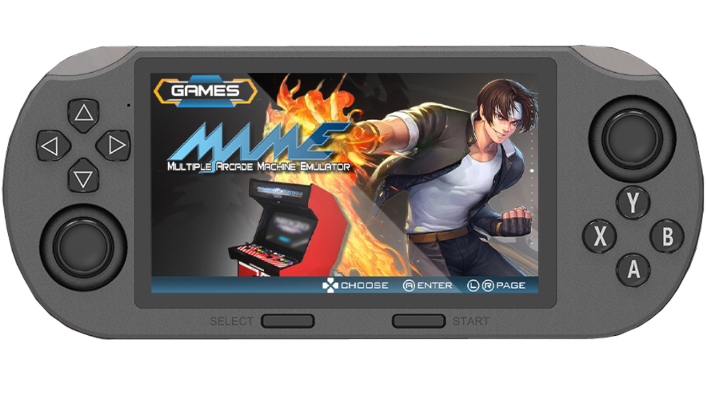
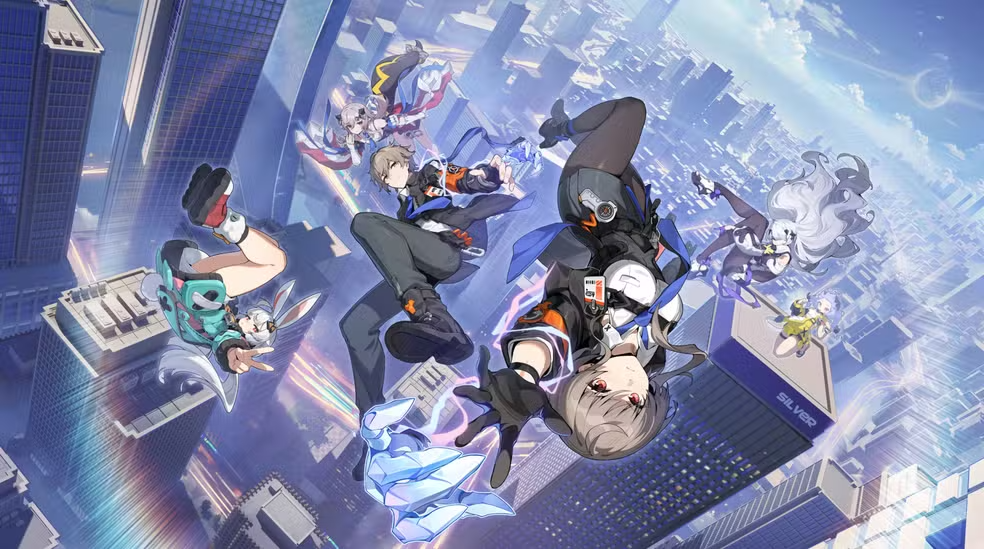

Custom BGM (GB300/SF2000)
- 1. SF2000/GB300 Stock BGM (Remake Fixed)
- The start sound starts halfway through.
- The loop from the end to the beginning is not correct.
- The song is officially 1 minute 12 seconds long, but it's about 1 second shorter. (1.308 seconds, to be exact)
Fixed the following issues with the stock BGM that had been concerned about.
- 2. Stock BGM
- Up-tempo Arrange Version - (It seems that Stock BGM was originally the background music for the "Parkour Everyday" game app.)
Arranged version for those who are tired of Stock BGM above.
It think would be interesting to compare the two. 🎶
- 3. Parkour Run To You
- "Cool Running Run To You" (Stock BGM original song) Converted the original song version into background music. 🎵 It has a similar melody to Up-tempo Version above.
- 4. SF3000 Concept BGM 
- (This think also a song from the "Parkour Everyday" game app.) The concept image evokes a futuristic feeling, but it also feels somewhat similar to the melody mentioned above. 🎶
Recommended image song as a possible background music for SF3000.
- 5. Froggy Summer BGM
- (This think also a song from the "Parkour Everyday (Summer Edition)" game app.)
A refreshing song with a bright samba-like rhythm 🎵
It's easy to use as background music.
- 6. Wii Menu BGM
Background music suitable for "Wii menu like style theme".
- 7. SNES-Station Menu Music
- "Can't Stop Coming" Another Remix
SNES Station's background music, different version (Properly looped ver.)
- 8. Ananta (Project Mugen) 
"Ananta (Project Mugen)" Official background music.
- 9. RetroXMB - Portable Sound Pack

This pack contains only the operation sounds included with "RetroXMB".
If don't like the stock operation sound, might want to try this pack.
« Back